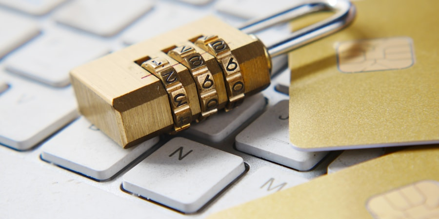

Password Security: Protecting Your Academic and Personal Accounts
The Password Problem
Passwords are often the only barrier between your private information and
cybercriminals. Yet most students don't take password security seriously
enough, putting their academic work, financial accounts, and personal data
at risk.
43%of students reuse passwords across multiple platforms
15+average number of accounts a student manages
<1 sectime to crack a weak 6-character password

Strong passwords are your first line of defense against unauthorized access
Common Password Mistakes Students Make
Understanding what makes a password weak helps you avoid these pitfalls:
Using personal information - Birthdays, pet names,
partner names, and university names are easy to guess. Attackers check
social media for this information first.
Passwords shorter than 12 characters - Modern computers
can crack 8-character passwords in hours. Length matters more than
complexity.
Reusing passwords across accounts - If one service is
breached, all your accounts with the same password are compromised.
Sharing passwords with friends - Relationships change,
and shared passwords often aren't changed afterward.
Writing passwords on sticky notes - Physical security
matters too. Anyone walking past your desk can see your passwords.
Using common passwords - "123456", "password",
"qwerty", and "student" are in every attacker's dictionary.
The Danger of Password Reuse
When you use the same password for multiple accounts, one data breach
exposes all of them. Criminals use "credential stuffing" - automatically
trying stolen username/password combinations on hundreds of popular
services.
Creating Strong Passwords
The best passwords are both strong (hard to crack) and memorable (so you
don't need to write them down). Here are proven methods:
Method 1: Three Random Words (NCSC Recommended)
The UK National Cyber Security Centre recommends combining three random,
unrelated words. This creates passwords that are:
Long enough to resist cracking (12+ characters)
Memorable without writing down
Unique to each account (add a service hint)
Example: Three Random Words
purple-giraffe-telescope - 26 characters, memorable,
and would take centuries to crack with current technology.
For different accounts, add a hint: purple-giraffe-telescope-UNI
for university, purple-giraffe-telescope-BANK for banking.
Method 2: Passphrase from a Sentence
Create a memorable sentence and use the first letters of each word,
mixing in numbers and symbols.
Example: Passphrase Creation
Sentence: "I started university in 2024 and my favourite class is Web Design!"
Password: Isui2024&mfciWD! - 16 characters, includes
uppercase, lowercase, numbers, and symbols.
What Makes a Password Strong?
Length: 12+ characters minimum (16+ is better)
Uniqueness: Different for every account
Unpredictability: Not based on personal information
No dictionary words: As single elements (random combinations are fine)
Password Managers: Your Digital Vault
A password manager is software that generates, stores, and fills in unique
passwords for all your accounts. You only need to remember one master
password.
Benefits of Password Managers
Generate strong passwords - Creates random, complex
passwords for each account automatically
Remember everything - Securely stores unlimited
passwords so you don't have to memorize them
Auto-fill forms - Enters credentials automatically,
saving time and preventing typos
Detect phishing - Won't auto-fill on fake websites
because the URL doesn't match
Sync across devices - Access passwords on your phone,
laptop, and tablet
Recommended Free Password Managers
Bitwarden
Open-source, free tier includes unlimited passwords across all
devices. Excellent security audit record.
Install a password manager, create a strong master password using the
methods above, then gradually add your accounts. Most browsers offer
to import saved passwords, making migration simple.
Two-Factor Authentication (2FA)
Two-factor authentication adds a second layer of security beyond your
password. Even if an attacker steals your password, they can't access
your account without the second factor.
99.9%of automated attacks are blocked by 2FA
Types of 2FA
Authenticator apps (recommended) - Apps like Google
Authenticator or Authy generate time-based codes on your phone.
Most secure common option.
SMS codes - Text message codes sent to your phone.
Better than nothing, but can be intercepted via SIM swapping.
Hardware keys - Physical devices like YubiKey.
Most secure, but requires purchasing hardware.
Biometrics - Fingerprint or face recognition.
Convenient but depends on device security.
Where to Enable 2FA First
Prioritize these accounts for immediate 2FA protection:
University email and student portal
Primary personal email (Gmail, Outlook, etc.)
Banking and financial accounts
Social media (especially if linked to other accounts)
Cloud storage (Google Drive, Dropbox, OneDrive)
Save Your Backup Codes!
When you enable 2FA, most services provide backup codes. Save these
somewhere secure (like your password manager) - they're your only way
back into your account if you lose your phone.
Watch: Password Security Explained
This video explains why password security matters and demonstrates how
to create and manage strong passwords.
Password Security Checklist
Use this checklist to improve your password security today:
Install a password manager (Bitwarden or Proton Pass)
Create a strong master password using the three-word method